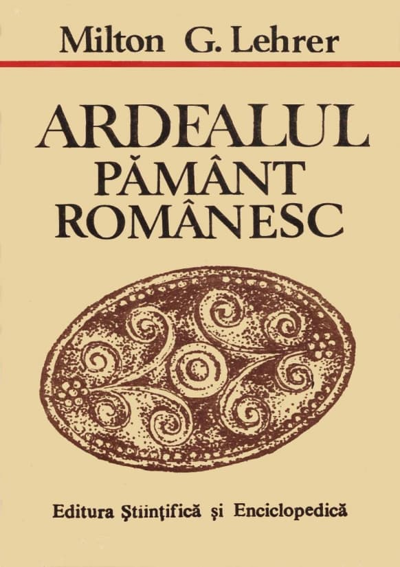
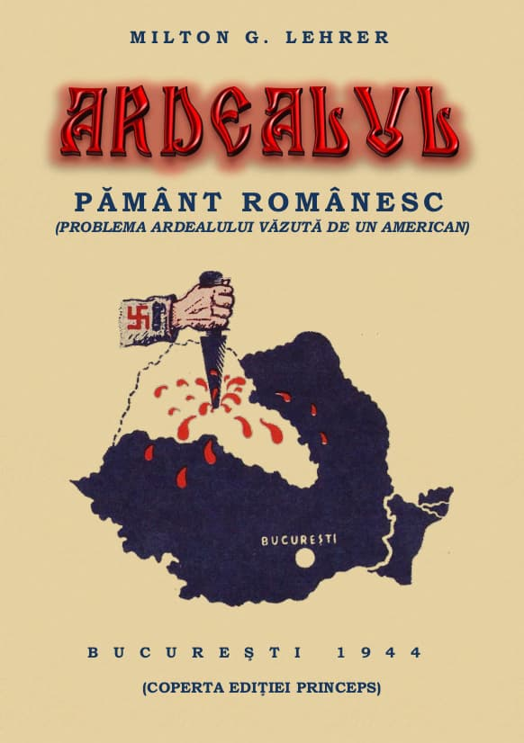

Rândurile de față nu au decât rolul de a atrage atenția asupra unei lucrări de referință ce prezintă dovezi clare asupra modului cum s-a luptat secole de-a rândul împotriva drepturilor românilor din Transilvania. Un genocid cultural și deseori în sens propriu. În fața datelor istorice, sociale și culturale, nedumeririle ziaristului american, atunci când se referă la himerele maghiare revizioniste, sunt din nefericire de mare actualitate, dacă avem în vedere recentele atitudini sfidătoare și provocatoare la adresa românilor.
Cartea lui Milton G. Lehrer ocupă un loc aparte în rândul lucrărilor de istorie a românilor, pentru că este scrisă de o persoană detașată de interese (firești, chiar și pentru un istoric obiectiv) privind binele propriei națiuni. În fond, un american bine documentat și bine intenționat, dirijat de un spirit al corectitudinii științifice, scrie sine ira et studio despre un popor aflat la mii de kilometri depărtare de țara sa. Ce poate fi mai captivant pentru un român decât să vadă cum este cunoscut, văzut și înțeles de către un străin? Cartea lui Milton Lehrer ne oferă privilegiul unei întâlniri cu noi înșine prin ochii altuia, un privilegiu cultural deosebit, date fiind amploarea și calitatea informațiilor, precum și frumusețea și claritatea expunerii. Autorul reușește să parcurgă o literatură uriașă, ce cuprinde numeroase tomuri de istorie (istorici italieni, germani, maghiari, francezi, englezi, români), articole din presa românească și internațională, opere politice, literare, memorialistică etc., cu o solidă justificare a fiecărei teze și de multe ori chiar cu ironie amară la adresa celor care se prezintă în lume, cu toate trâmbițele, drept mari civilizatori în spațiile cucerite. Din aceste motive România trebuie să îi păstreze vie recunoștința.
Ediția princeps a cărții (Ardealul – pământ românesc. Problema Ardealului văzută de un american) a apărut în anul 1944, la București, iar ediția din care citez a apărut în 1989, la Editura Științifică și Enciclopedică, prefața, notele și îngrijirea acestei ediții fiind asumate de conf. univ. dr. Ion Pătroiu.
Talentul autorului face ca această carte să fie citită aproape ca un roman polițist având o anvergură națională și regională, vizând soarta milioanelor de români din Transilvania, dar și a celorlalte popoare asuprite, urmărind evoluția evenimentelor politice și sociale în centrul și sud-estul Europei. Meritul cărții este deosebit, fiind o realizare net superioară pe această temă, din moment ce îmbină o cantitate uriașă de informații istorice (obținute cu sprijinul prietenilor săi, istorici și politicieni democrați), cunoștințele juristului specialist în drept internațional și talentul gazetarului de talie internațională.
Din „Prefață” aflăm că ziaristul american s-a născut în 1906, în Brooklyn – New York. A făcut o parte a studiilor în țara noastră, pentru că părinții săi erau evrei români care au revenit în România. Astfel, el a învățat bine limba română, reușind să se exprime comparabil cu marii noștri scriitori, așa cum dovedește cartea Ardealul – pământ românesc, scrisă direct în limba română. Lehrer își continuă studiile la Paris, obținând titlul de doctor în drept internațional. În aceeași perioadă a devenit corespondent de presă al săptămânalului parizian Tribune des Nations, unde va relua colaborarea după Al Doilea Război Mondial. Va colabora la diferite publicații europene și la ziarul israelian Al Hamismar. După încheierea războiului, Milton G. Lehrer devine președintele asociației corespondenților de presă străini din România.
În nefericitul an 1940, când au fost rupte suprafețe uriașe din teritoriul țării noastre, el se afla în România, fiind trimis de revista pariziană pentru a realiza un reportaj cu privire la situația minorităților. Pentru că nu revine în Franța ocupată de naziști, Lehrer va cunoaște direct reacțiile societății românești față de Diktatul de la Viena, consemnând și relatările refugiaților din teritoriile cedate Ungariei horthyste. Nedreptățile pe care le-a observat l-au determinat să înceapă documentarea pentru cartea Ardealul – pământ românesc, realizând două versiuni, în franceză și în română. Finalizată în martie 1944, lucrarea n-a fost publicată în vremea regimului antonescian, care evita orice formă de polemică ce ar fi putut amplifica tensiunile între puterile axei. Ca atare, ea a fost publicată imediat după 23 August, când soarta războiului devenise destul de clară, iar geopolitica avea să se schimbe, făcând necesară prezentarea unor argumente clare referitor la drepturile românești asupra Transilvaniei, cu atât mai mult cu cât opinia publică internațională fusese mai multe decenii sub tirul propagandei revizionismului horthyst.
Versiunea în limba franceză (Le problème transylvain vu par un américain. La Transylvanie – terre roumaine), trimisă spre publicare în Elveția, conținea în plus față de aceasta în limba română, în prima parte, un consistent preambul istoric despre problema continuității daco-romane pe teritoriul Transilvaniei înainte de năvălirea ungurilor, însă, din nefericire, nu a fost publicată, fără a se ști ce s-a întâmplat cu manuscrisul.
După cum afirmă semnatarul prefaței, conf. univ. dr. Ion Pătroiu, „originalitatea și eficacitatea cărții lui Milton G. Lehrer stă însă, mai presus de toate, în economia ei interioară, în ierarhizarea problemelor luate în dezbatere și în succesiunea capitolelor. Acolo unde istoriografia românească era tentată să discute mai ales în planul istoric, să argumenteze, să apere, ziaristul american nu face decât să expună și să explice, cu metodă, elementele unui litigiu și dreptatea intrinsecă a unei cauze. El nu pledează într-un proces. El explică în ce constă monstruozitatea Diktatului de la Viena și nerușinarea cinică, minciuna sfruntată, falsul deliberat, ca «metode» esențiale ale propagandei revizioniste ungare. Curajul minciunii – fenomen din păcate nu specific veacului nostru, dar care a atins în secolul nostru, al celor mai perfecționate mijloace de informare, culmile fără precedent ce-i conferă specificitate, este un fenomen pus în lumină cu o consecvență implacabilă de-a lungul celor 432 de pagini ale cărții” (p. 23).
Iată care sunt, în ordine cronologică, principalele teme expuse în cartea lui Milton G. Lehrer. Partea I („Transilvania după năvălirea ungurilor”): Alföldul (Panonia), organizațiile politice ale românilor transilvăneni, luptele cu românii și cucerirea Transilvaniei, stăruința formelor de viață autohtonă, deznaționalizarea românilor prin secuime, prin religie, prin școală, prin armată, prin administrație, idealurile imperialiste ale maghiarilor, coloniștii germani, Unio Trium Nationum, interesul românilor pentru o Mare Unire, revoltele românilor și amplificarea atrocităților împotriva lor, Horea, Cloșca și Crișan, Supplex Libellus Valachorum, machiavelismul revoluționarilor lui Kossuth, Proclamația lui Simion Bărnuțiu, Revoluția din 1848 și Avram Iancu, personalități marcante în lupta pentru drepturile românilor, dualismul austro-ungar, procesul Memorandum-ului și reacțiile din Apus, propaganda ungurească, Regele Carol I și românii ardeleni, renașterea luptei românilor din Transilvania pentru dreptul de a fi tratați (în propria țară) asemenea celorlalte naționalități, maghiarizarea prin violență, Iuliu Maniu, Marele Război, Revoluția din 1918, 1 Decembrie 1918, haosul din Ungaria. Partea a II-a („Ungaria de la Trianon”): Ungaria de la Trianon, stat unitar și omogen, revizionism cu orice preț („stat mic cu ambiții nemăsurate”), „injustiția” de la Trianon, ofensiva propagandei maghiare și efectele ei fructuoase, oportunismul metodelor maghiare, modestia românească, Roma și românii, românii la Budapesta, „civilizația” maghiară și „barbaria” română. Partea a III-a („Regimul minorităților sub unguri și sub români”): maghiarizarea numirilor toponimice, a numelor de persoane, regimul presei minoritare sub unguri și sub români, reforma agrară și optanții unguri, școala sub unguri și sub români, Diktatul de la Viena, teroarea ocupației maghiare în Ardealul de Nord, „apărătorii creștinismului” – dărâmători de biserici.
Mărturiile și impresiile despre unguri sunt numeroase în cronicile popoarelor care au avut de-a face cu ei (vezi, de pildă, la subcapitolul „Cavalerii misionarismului civilizator”). Însă atrag atenția în mod deosebit cuvintele cronicarilor secui, precum Mihály Nagyajtai Cserei (secolul al XVII-lea), care descrie setea de sânge a ungurilor, uneori fără niciun câștig, și prezintă motivele „simțămintelor dușmănoase pe care secuii le-au nutrit dintotdeauna față de unguri. «Nenorocirea Transilvaniei, spune el, din țara ungurească și de la unguri s-a tras întotdeauna. Așa am pierdut și țara și libertatea».
Şi, adresându-se în urmă Transilvaniei, pe care în 1940 Ciano și Ribbentrop au ciuntit-o pentru a înlesni – ce crudă ironie – unirea secuilor cu ungurii, Cserei exclama: «Fie-ți de învățătură de acum înainte, o Transilvania, iubita mea patrie! Cu ungurii să nu te întovărășești ca să nu suferi înfricoșător, precum suferi acum!».
Dacă, față de toate aceste dovezi categorice mai este necesar a mai dovedi sentimentele ostile care i-au animat dintotdeauna pe secui față de unguri, cităm din istoria Transilvaniei o împrejurare întru totul concludentă. Când, la începutul secolului al XVII-lea, domnul român Mihai Viteazul a intrat în Transilvania, secuii s-au alăturat lui pentru a lupta împotriva ungurilor. Secuii au preferat deci în trecut suveranitatea și guvernarea românească asprei dominații maghiare” (pp. 377-378).
Într-o amplă notă de subsol (pp. 378-380) unde este citat cronicarul secui Nagy Szabó Ferenc (sfârșitul secolului al XVI-lea, începutul secolului al XVII-lea), martor ocular al evenimentelor din timpul domniei lui Mihai Viteazul, este redat cu multă durere tratamentul diabolic de care au avut parte iobagii secui – eliberați de Sigismund Báthory – care au răspuns chemării voievodului muntean și au participat, sub conducerea lui Albert Király, la bătălia de la Călugăreni și ulterior, la alungarea otomanilor la sudul Dunării.
„Întorși acasă, ei au fost însă aspru pedepsiți de către nobilime și readuși în starea de iobăgie, decretată la 1562 de către marea nobilime maghiară. Profitând și de plecarea la Praga a lui Sigismund Báthory, nobilii – arătă cronicarul secui Nagy Szabó Ferenc – «au ținut sfat între ei; au ridicat oaste și toată oastea din curte în fiecare cetate de scaun, au ridicat călăreți, pedestrași și au scos durde, tunuri; acestea însă atât de tainic față de nevolnicii aceia de secui, încât în veci n-ar fi putut prinde aceia de veste că oastea era contra lor, că nemeșii pe ei vor să-i reducă la iobăgie. Eu nici c-am auzit să se fi adunat în vreun scaun secuii aceia, în propria lor apărare.
De aceia apoi, precum au fost hotărât în taină între ei, fruntașii secui s-au năpustit asupra lor toți odată – în aceeași zi în toate scaunele – și au fost înregistrat ei, cine pe cine să prindă în fiecare scaun; și, căzând ei așa, către seară asupra lor, i-au surprins în pat pe cei ce i-au fost scris. Așa au făcut în fiecare scaun. Pe cei pe care i-au putut prinde i-au târât apoi legați în cetățile de scaun și acolo au fost uciși în număr mare bieții nevinovați, care spânzurați, care trași în țeapă, care schingiuiți și dați pieirii altminteri, ciumpăviți de nas, de urechi, care, iarăși, ciomăgiți într-atâta, încât au murit.
Ca și în alte cetăți de scaun, fruntașii secui din scaunul Mureș au adunat oaste și aici, în Târgu Mureș și au scos în piață multe arme de foc. Într-o seară, pe la asfințit, am văzut că și călăreții se pregătesc, dar nimeni nu știa, în afară de ei, unde merg. Am văzut, doar că au plecat în toate părțile. Şi au mers dară în scaunul Mureș și – precum, am scris și mai sus – au înhățat capii secuilor pe care i-a fost slobozit mai demult Sigismund Báthory. Pe care i-au găsit peste noapte în pat, așa i-au luat în casele lor, de lângă neveste. Spre dimineață dar, ostașii au revenit și așa i-au adus, bieții de ei, ca pe cine știe ce răufăcători. Deloc n-au tărăgănat, ci chiar a doua zi au pus să se cioplească mulțime de țepi din pădurea orașului și țepile s-au cărat la spânzurătoare. Acolo i-au târât și pe secui și pe mulți din ei, sărmanii, i-au tras în țeapă, pe mulți i-au spânzurat. Spre seară, din nou au trimis și au adus, în același fel, alții. Până în cealaltă dimineață au răpit și adus alți robi secui, pe care i-au măcelărit tot așa, sub spânzurătoare.
L-au adus și pe unul, Károly András – acesta le-a fost căpetenie; pe el l-au târât legat de coada unui cal și l-au tras în țeapă cu capul în jos, sărmanul, și cu picioarele în sus, către cer – așa l-au batjocorit pe nevinovat. Din nou au spânzurat, sumedenie; zile-n șir, tot așa au stat lucrurile. Odată și-odată li s-a făcut lehamite de ucideri; le-au lăsat baltă, dar s-au apucat să le reteze nasurile, urechile, dar și aceasta cu atâta sălbăticie, încât nasul îl retezau cu buze cu tot, de le rămâneau, sărmanilor, doar dinții și așa au și murit mulți, din asta; și pe cei cărora le retezau urechile îi jupuiau până spre gât. La asemenea sălbăticii s-au dedat cu ei. Până la urmă, au dat-o încolo și pe asta și au poruncit să fie doar snopiți; și au pus să se facă o spată de lemn atât de mare, încât era de speriat, însă i-au cioplit tăiș și muchie; cu aceasta, trăgeau nouă lovituri cu latul, dar ultima o trăgeau peste fund, cu tăișul palei, care – am văzut – cădea atât de greu, încât oasele șezutului se făceau mici fărâme din asta. S-a vorbit că mulți nenorociți au murit și din asta. S-au purtat atunci tare urât cu bieții secui eliberați, care au fost mers cu Sigismund Báthory în Țara Românească. Treaba aceasta a fost în 1596. Acestea, cu ochii mei le-am văzut». (Marosvásárhelyi Nagy Szabó memoriálejá / Memorialul lui Nagy Szabó Ferenc din Târgu Mureș/, în Mikó Imre: „Erdélyi történelmi adatok”/Date istorice transilvănene/, vol. I, Cluj, 1855, p. 45-47; vezi și Baranyai Décsi János, Istoria ungară, în Monumenta Hungariae Historica Scriptores, XVIII, 1866, p. 246-247).
Pe bună dreptate, cronicarul secui se întreba cu amărăciune «ce-au câștigat nemeșii unguri cu aceea că pe secuii care au fost mers pentru slobozenie cu Sigismund Báthory asupra turcului, în Țara Românească, și venind acasă de acolo i-au măcelărit acasă și i-au făcut iarăși iobagi? Nici păgânii n-ar fi săvârșit una ca asta, din contra, le-ar fi fost milă de ei de-ar fi văzut-o» (Marosvásárhelyi Nagy Szabó memoriálejá, în loc. cit., p. 53).
În 1599, când se pregătea să treacă la înfăptuirea unirii țărilor române, Mihai Viteazul «le-a trimis în mare taină răvaș și secuilor – acelora care fuseseră repuși în iobăgie, cu mare vărsare de sânge, în anul 1596», «și – menționa același cronicar, Nagy Szabó Ferenc, – s-a legat să le dea acelora, dar și celorlalți, slobozenie. Văzând răvașul voievodului, pe dată secuii au început să se pregătească» (Ibid., p. 52). Pentru ajutorul primit, după intrarea sa triumfală în Alba Iulia, Mihai Viteazul a confirmat secuilor oficial eliberarea lor din iobăgie și a impus dietei nobiliare, întrunită la 20-28 noiembrie 1599, să recunoască vechile lor drepturi și libertăți (I. Lupaș, Documente istorice transilvănene, vol. I, 1599-1699, Cluj, 1940, p. 3-7).
După înfrângerea lui Mihai Vodă Viteazul la Mirăslău, nobilii unguri s-au răzbunat din nou sângeros asupra iobagilor secui. «Sus, pe un deal înalt, – relata același cronicar secui – stătea secuimea fugită – o ceată mare de oameni, cică erau optsprezece sute, dar eu nu i-am văzut – pe care-i chemau jos de-acolo, să se predea, însă ei au spus că nu coboară, fiindcă se tem că-i taie; și, daca tot trebuie să moară, mai bine mor cu arma-n mână. Auzind așa, nemeșimea l-a trimis acolo pe Daczó János și el s-a legat cu jurământ față de ei; însă aveau să vadă ei ce fel a fost jurământul, iar sărmanii aceia au coborât cu încredere și, cu tot jurământul, nemeșimea s-a năpustit asupra lor fără să-i pese de nevinovați și, împresurându-i, i-a tăiat pe toți, bieții de ei, cu răcnete asurzitoare, într-atâta încât mormanul de trupuri a fost cât un deal. Cică a curs pârâu sângele de sub trupuri.
Așa a răzbunat nemeșimea plecarea secuimii la Sibiu, lângă Mihai Vodă și așa i-a redus-o iarăși la iobăgie, precum i-a fost măcelărit și în anul 1596, când cu plecarea lor în Țara Românească» (Marosvásárhelyi Nagy Szabó memoriálejá, în loc. cit., p. 56-57).”
Dacă așa au fost tratați secuii de către nobilii maghiari, înțelegem ce sentimente (exprimate ostentativ, de altfel, unele fiind redate în carte) aveau față de români, mai ales când aceștia se revoltau, nemaiputând îndura iadul robiei. Imaginile descrise de la pedepsirea lui Gheorghe Doja și a lui Horea și Cloșca sunt emblematice…
Redăm un alt citat din atât de multele care ar putea fi extrase, în speranța că cititorii revistei vor lectura cartea lui Milton G. Lehrer, pentru a înțelege măcar o parte din jertfele pe care s-a clădit România Mare:
„Legile «Approbatae et Compilatae», votate de Dieta transilvăneană în anul 1653, sunt cea mai fidelă icoană a prigoanei la care erau supuși românii transilvăneni din partea principilor calvini și ai nobililor care roiau în jurul lor. Iată una dintre cele mai faimoase dispozițiuni, privitoare la românii din Transilvania, a acestei colecții de legi:
«Românii sunt tolerați numai, și aceasta în chip provizoriu (pro tempore) în această țară, atâta timp cât va place principelui domnitor și nobililor (usque bene placitum principum et regnicolarum»).
La bunul plac al nemeșilor unguri! Numai aceste cuvinte sunt suficiente spre a reda tragica situațiune a țărănimii românești din «țara clasică a toleranței».
Neputându-i converti la calvinism prin metoda persuasiunii, principii Transilvaniei recurg la o serie de măsuri meschine împotriva românilor, constituind o pată pe blazonul – și așa atât de sumbru – al principilor calvini.
Astfel, se interzice românilor de a poseda arme, de a avea cai, de a purta cizme și pantaloni de stofă, de a purta cămăși de pânză fină și, – last but not least – cităm pentru ilustrarea metodelor feudale, o lege care prevedea chiar interzicerea portului pălăriilor… în valoare mai mare de un florin!” (pp. 98-99).
Și după toate acestea, după 10 secole de sclavie la ei în țară, „Românii n-au înțeles să se răzbune, ci, printr-un gest de înaltă ținută morală, ei au întins o mână împăciuitoare ungurilor cu care aveau să conlocuiască pe pământul Transilvaniei. Adunarea națională de la Alba Iulia [prin Proclamația de l Decembrie 1918, n.n.] a decretat într-adevăr:
1. «Deplină libertate națională pentru toate popoarele conlocuitoare. Fiecare popor se va instrui, administra și judeca în limba sa proprie, prin indivizi din sânul său și fiecare popor va primi dreptul de reprezentare în Corpurile Legiuitoare și la guvernarea țării, în proporție cu numărul indivizilor ce-l alcătuiesc.»
2. Deplină libertate autonomă confesională pentru toate confesiunile de stat.
3. Înfăptuirea desăvârșită a unui regim curat democratic pe toate terenurile vieții publice.
Votul obștesc, direct, egal, secret.
4. Libertatea de presă, asociere și întrunire, libera propagandă a tuturor gândurilor omenești.
Ce contrast, pe de altă parte, între atât de liberala atitudine a revoluționarilor români din 1918 și îngustimea concepțiilor care au prezidat la revoluția ungară din 1848!…”
Aceste idei au fost reluate, după Marea Unire, de către numeroși oameni politici români, însă nu ca program electoral, ci au reprezentat atitudini materializate în fapte, dovedind bunele intenții și lipsa oricărei dorințe de răzbunare a românilor față de cei care i-au tratat ca pe neoameni chiar pe pământul strămoșilor lor. Și cu toate acestea, liderii politici maghiari s-au considerat mereu victime ale nedreptății, nedreptate ce consta în a nu mai fi lăsați să facă ce vor în casa și ograda altuia, inclusiv cu viețile casnicilor. Milton G. Lehrer prezintă opiniile epocii interbelice, lăsând fiecare parte „să vorbească”, pentru ca cititorii să tragă singuri concluziile.
Se spune – printre optimiști – că „timpul”, „istoria” le va judeca pe toate în cele din urmă. Chiar dacă multe fapte ies la iveală peste veacuri, nu pe această ureche trebuie să se culce creștinul. El știe că în timp, din diferite motive ce îi pot scăpa înțelegerii sale, omul poate trece prin numeroase încercări, dar mai știe și că deasupra timpului este Dumnezeu, la care nu există nedreptate, și că faptele timpului de aici au ecou nesfârșit în veșnicie. Trăind într-o astfel de lumină hristică, omul nu se mai teme de cei ce pot omorî trupul; este și trebuie să fie prudent, să întărească paza, dar nu este paranoic; de asemenea, el nu devine lup atunci când îl avantajează contextul. Așezat cum trebuie cu fața spre Cer, vrea doar să „lupte lupta cea bună”. În aceasta se află izvorul tăriei și stabilității sale în fața tuturor furtunilor istoriei.
Așa se și explică prezența românilor transilvăneni în calendarul creștin ortodox, mulți fiind la categoria mucenicilor și a mărturisitorilor: Sf. Ierarhi Ilie Iorest, Simion Ștefan și Sava Brancovici, mitropoliții Transilvaniei, Sf. Ier. Iosif Mărturisitorul din Maramureș, Sfinții Mărturisitori Visarion și Sofronie, Sf. Mc. Oprea, Sfinții Preoți Mărturisitori Ioan din Galeș și Moise Măcinic din Sibiel, Sfinții Martiri și Mărturisitori Năsăudeni: Atanasie Todoran din Bichigiu (în vârstă de 104 ani atunci când a fost frânt cu roata de sus în jos), Vasile din Mocod, Grigorie din Zagra și Vasile din Telciu. Și atâția alții știuți și neștiuți, autentice modele de bărbăție, demnitate, în viață și în trecerea din această viață. În biografiile lor întâlnim luptele, jertfele, durerile și izbânzile românilor transilvăneni.
Trebuie să le cinstim mai des memoria și să îi rugăm tot mai mult să mijlocească la Hristos pentru neamul românesc.

Comentarii